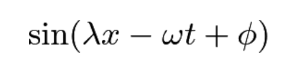

This allows the visual study of constructive interference, destructive interference, standing waves, and arbitrary superposition of two same-amplitude sinusoidal waves. Each wave’s wavelength, angular frequency, and phase offset can be modified.
When each wave can be represented by

where lambda is wavelength, x is distance, omega is angular frequency, t is time, and phi is a phase shift, a combination of two wave functions over space and time can show interesting curves.
Wave 1 Properties
Wavelength
Angular Frequency
Phase Offset
Wave 2 Properties
Wavelength
Angular Frequency
Phase Offset
Future plans for this project include allowing the superposition of more than 2 waves, improved user-interface, and circularly or elliptically polarized waves.